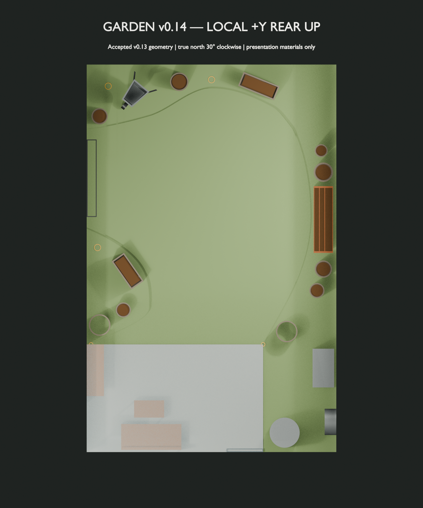
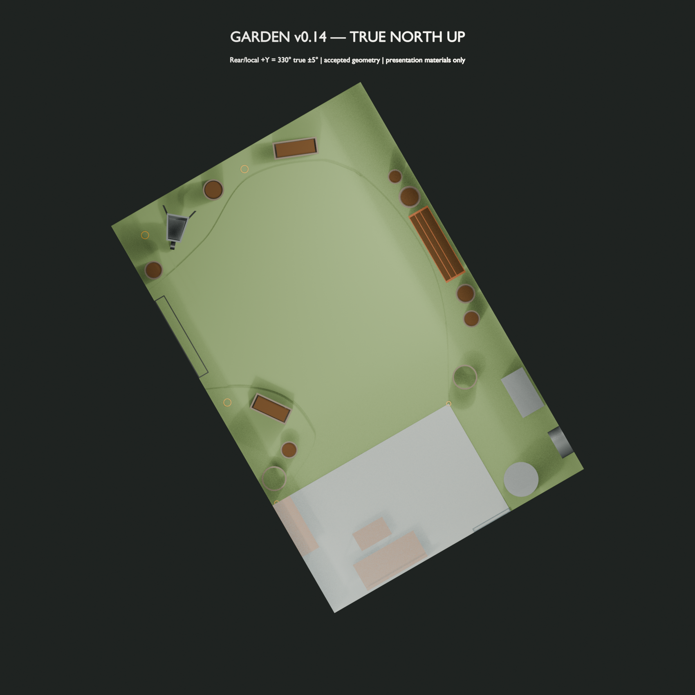

Orientation
The rear bearing is approximately 330° true ±5°. The solar work checks the 325°, 330° and 335° orientation bracket.
Garden layout & solar planning package
A clear, browser-based view of the garden layout, interactive 3D model and scenario-bracketed solar analysis. No specialist software or sign-in is required.
Before you begin
The rear bearing is approximately 330° true ±5°. The solar work checks the 325°, 330° and 335° orientation bracket.
Nearby structures and trees are represented as scenario brackets, not as invented or surveyed off-site geometry.
Gum-tree cases are uncertainty tests using porous-canopy assumptions. They are not surveyed tree models.
The results are suitable for garden planning. They are not survey, construction, fabrication or purchasing documentation.
The spatial plan


PDF · dimensioned reference
The frozen dimensioned drawing retained beneath the later presentation layout.
Open reference PDFWalk around the layout
Scenario-bracketed evidence
Direct-sun-equivalent averages at the central 330° bearing. These are planning averages, not a promise for every planting point.
| Season | Baseline | Likely | Conservative |
|---|---|---|---|
| Winter | 3.07 | 2.31 | 1.77 |
| Autumn | 5.47 | 5.44 | 4.76 |
| Spring | 5.41 | 5.38 | 4.67 |
| Summer | 6.74 | 6.38 | 5.76 |
Baseline, likely and conservative cases show the material effect of unresolved off-site obstruction.


The established ±5° bearing uncertainty is shown at 325°, 330° and 335°.


How to read this
Structural obstructions are treated as opaque. Gum-tree influence is a porous biological sensitivity. The useful result is the range across plausible cases.
Read the full solar summaryTake a copy
The human-readable PDFs come first. Technical CSV/JSON evidence is available for people who need to inspect the underlying planning outputs.
A self-contained public copy of this wrapper and its approved assets. This derivative has its own hash and does not replace the frozen R5 share master.
Download public packageThree pages covering the spatial plan, 3D model and planning disposition.
Open PDFFour pages covering the scenarios, results, heatmaps and interpretation boundary.
Open PDFThe recipient-friendly garden layout overview.
Open PDF{kind=link}
{kind=link}
{kind=link}